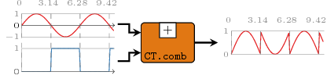
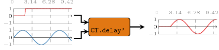
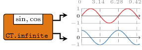
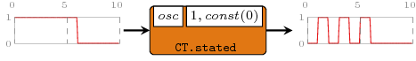
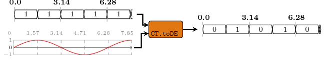

---
layout: haddock
--- 
 <div id="package-header"><ul class="links" id="page-menu"><li><a href="src/ForSyDe-Atom-MoC-CT.html">Source</a></li><li><a href="index.html">Contents</a></li><li><a href="doc-index.html">Index</a></li></ul><p class="caption">forsyde-atom-0.2.2.1: A shallow-embedded DSL for modeling cyber-physical systems</p></div><div id="content"><div id="module-header"><table class="info"><tr><th valign="top">Copyright</th><td>(c) George Ungureanu KTH/ICT/ESY 2016</td></tr><tr><th>License</th><td>BSD-style (see the file LICENSE)</td></tr><tr><th>Maintainer</th><td>ugeorge@kth.se</td></tr><tr><th>Stability</th><td>experimental</td></tr><tr><th>Portability</th><td>portable</td></tr><tr><th>Safe Haskell</th><td>Safe</td></tr><tr><th>Language</th><td>Haskell2010</td></tr></table><p class="caption">ForSyDe.Atom.MoC.CT</p></div><div id="table-of-contents"><p class="caption">Contents</p><ul><li><a href="#g:1">Continuous time (<code>CT</code>) event</a></li><li><a href="#g:2">Aliases &amp; utilities</a></li><li><a href="#g:3"><code>CT</code> process constuctors</a><ul><li><a href="#g:4">Simple</a></li><li><a href="#g:5">Interfaces</a></li></ul></li></ul></div><div id="description"><p class="caption">Description</p><div class="doc"><p>The <code>CT</code> library implements the atoms holding the sematics for the
 continuous time computation model. It also provides a set of
 helpers for properly instantiating process network patterns as
 process constructors.</p><p>For working with time or timestamps please check the utilities
 provided by the <a href="ForSyDe-Atom-MoC-Time.html">ForSyDe.Atom.MoC.Time</a> and
 <a href="ForSyDe-Atom-MoC-TimeStamp.html">ForSyDe.Atom.MoC.TimeStamp</a> modules.</p><p><strong>IMPORTANT!!!</strong>
 see the <a href="ForSyDe-Atom.html#naming_conv">naming convention</a> rules
 on how to interpret, use and develop your own constructors.</p></div></div><div id="interface"><h1 id="g:1">Continuous time (<code>CT</code>) event</h1><div class="doc"><p>According to <a href="ForSyDe-Atom.html#lee98">[Lee98]</a>, &quot;[regarding
 metric time] at a minimum, <em>T</em> is an Abelian group, in addition
 to being totally ordered. A consequence is that <em>t&#8322;</em> -
 <em>t&#8321;</em> is itself a tag &#8704; <em>t&#8321;</em>, <em>t&#8322;</em> &#8712;
 <em>T</em>. In a slightly more elaborate model of computation, <em>T</em> has a
 metric. (...) A continuous-time system is a metric timed system
 <em>Q</em> where <em>T</em> is a continuum (a closed connected set).&quot;</p><p>The continuous time (<code>CT</code>) MoC defines the closest behavior to
 what we could call &quot;physical time&quot;, where signals cover the full
 span of a simulation as &quot;functions of time&quot; rather than
 &quot;values&quot;. As such, we can state:</p><dl><dt>The CT MoC</dt><dd>is abstracting the execution semantics and describes
 a system where computation is performed continuously over a
 (possibly infinite) span of time.</dd></dl><p>Below is an illustration of the behavior in time of the input and
 the output signals of a CT process:</p><p></p><p>Our CT MoC is implemented as an enhanced version of
 <code><a href="ForSyDe-MoC-DE.html#v:DE">DE</a></code> with respect to the <strong>CT MoC</strong> definition, in
 the sense that:</p><ol><li>tags <em>t</em> are also represented with
 <code><a href="ForSyDe-Atom-MoC.html#v:TimeStamp">TimeStamp</a></code>s, thus we can say that changes in a
 CT signal happen at discrete times (see below).</li><li>values are represented as functions over a continuous span of
 time <em>f(t)</em> rather than just a value or a series of values. The
 time domain is represented with rational numbers which, as
 compared to floating point numbers, do not suffer from inherent
 quantisation, being able to model true continuity, i.e. between
 any two arbitrary points in time there is an infinite amount of
 intermediate moments.</li><li>The event constructor has also a <em>phase</em> component <em>&#966;</em>,
 which is taken into consideration only when evaluating the event
 function, i.e. <em>f (t + &#966;)</em>. This enables the modeling of
 &quot;phase dispacements&quot; of delay lines without altering the function
 itself (and thus increasing the complexity of the un-evaluated
 function graph). The phase needs to be reset during event
 synchronization.</li></ol><p>These seemingly minor changes have deep implications in the
 expressiveness of a FoSyDe CT system and how we interpret
 it. Capturing the particularities of this MoC, we can formulate
 the following properties:</p><p></p><ol><li><code><a href="ForSyDe-Atom-MoC-CT.html#t:CT">CT</a></code> signals, due to their formation as streams of tagged
 events, represent <em>discrete</em> changes in a continuous function
 over time (e.g. analog signal). While the functions carried by
 events are infinite (have always happened and will always
 happen), being carried by events in a tag system suggests that
 changes occur at discrete times. A CT signal can be represented
 by the analog circuit above, where the inputs are continuous
 signals, but the switch is discrete. Like in the
 <code><a href="ForSyDe-MoC-DE.html#v:DE">DE</a></code> MoC, the absolute time 0 represent the time
 when the system started to be observed.</li><li>the previous property is also proven by the fact that the
 evaluation engine of ForSyDe-Atom is inherently discrete,
 i.e. evaluation is performed whenever a new event occurs, in a
 dataflow manner. Allowing infinitely small distances between tags
 would hinder the advancement of simulation time.</li><li>events carry <em>functions</em> and not <em>values</em>. In a lazy
 evaluation system like Haskell's, functions are kept symbolic
 until evaluation. This means that in a CT system computations are
 propagated as function graphs until a result is needed, e.g. a
 signal is plotted for arbitrary positions in time. This way
 intermediate quantization errors are eliminated, and the cost of
 higher plot resolution is the cost of evaluating the final
 results only.</li><li>needless to say, for each <em>t</em> &#8712; <em>T</em>, a signal is able to
 return (e.g. plot) the exact value <em>v</em> for that particular <em>t</em>.</li><li>since itself the <code><a href="ForSyDe-MoC-CT.html#v:CT">CT</a></code> MoC is just an enhanced
 <code><a href="ForSyDe-MoC-DE.html#v:DE">DE</a></code> system, all atom evaluation properties are
 inherited from it: feedback loops need to advance time, atoms are
 forbidden to clean signals, and the conservative approach makes
 it ideal for parallel/distributed simulation.</li><li>since <em>T</em> is a total order, there is no need for an
 <a href="ForSyDe-Atom-MoC.html#context">execution context</a> and we can
 ignore the formatting of functions in <a href="ForSyDe-Atom-MoC.html">ForSyDe.Atom.MoC</a>, thus we
 can safely assume:</li></ol><p></p></div><div class="top"><p class="src"><span class="keyword">type</span> <a id="t:TimeStamp" class="def">TimeStamp</a> = <a href="file:///opt/ghc/8.2.1/share/doc/ghc-8.2.1/html/libraries/time-1.8.0.2/Data-Time-Clock.html#t:DiffTime">DiffTime</a> <a href="src/ForSyDe-Atom-MoC-TimeStamp.html#TimeStamp" class="link">Source</a> <a href="#t:TimeStamp" class="selflink">#</a></p><div class="doc"><p>Alias for the type representing discrete time. It is inherently
 quantizable, the quantum being a picosecond (10&#8315;&#185;&#178;
 seconds), thus it can be considered order-isomorphic with a set of
 integers, i.e. between any two timestamps there is a finite number
 of timestamps. Moreover, a timestamp can be easily translated into
 a rational number representing fractions of a second, so the
 conversion between timestamps (discrete time) and rationals
 (analog/continuous time) is straightforward.</p><p>This type is used in the explicit tags of the
 <code><a href="ForSyDe-Atom-MoC-DE.html#v:DE">DE</a></code> MoC (and subsequently the discrete event
 evaluation engine for simulating the <code><a href="ForSyDe-Atom-MoC-CT.html#v:CT">CT</a></code> MoC).</p></div></div><div class="top"><p class="src"><span class="keyword">type</span> <a id="t:Time" class="def">Time</a> = <a href="file:///opt/ghc/8.2.1/share/doc/ghc-8.2.1/html/libraries/base-4.10.0.0/Prelude.html#t:Rational">Rational</a> <a href="src/ForSyDe-Atom-MoC-Time.html#Time" class="link">Source</a> <a href="#t:Time" class="selflink">#</a></p><div class="doc"><p>Type alias for the type to represent metric (continuous)
 time. Underneath we use <code><a href="file:///opt/ghc/8.2.1/share/doc/ghc-8.2.1/html/libraries/base-4.10.0.0/Prelude.html#t:Rational">Rational</a></code> that is able to represent any
 <em>t</em> between <em>t&#8321;</em> &lt; <em>t&#8322;</em> &#8712; <em>T</em>.</p></div></div><div class="top"><p class="src"><span class="keyword">data</span> <a id="t:CT" class="def">CT</a> a <a href="src/ForSyDe-Atom-MoC-CT-Core.html#CT" class="link">Source</a> <a href="#t:CT" class="selflink">#</a></p><div class="doc"><p>The CT type, identifying a continuous time event and implementing an
 instance of the <code><a href="ForSyDe-Atom-MoC.html#t:MoC">MoC</a></code> class.</p></div><div class="subs constructors"><p class="caption">Constructors</p><table><tr><td class="src"><a id="v:CT" class="def">CT</a></td><td class="doc empty">&nbsp;</td></tr><tr><td colspan="2"><div class="subs fields"><p class="caption">Fields</p><ul><li><dfn class="src"><a id="v:tag" class="def">tag</a> :: <a href="ForSyDe-Atom-MoC-CT.html#t:TimeStamp">TimeStamp</a></dfn><div class="doc"><p>start time of event</p></div></li><li><dfn class="src"><a id="v:phase" class="def">phase</a> :: <a href="ForSyDe-Atom-MoC-CT.html#t:Time">Time</a></dfn><div class="doc"><p>phase. Models function delays</p></div></li><li><dfn class="src"><a id="v:func" class="def">func</a> :: <a href="ForSyDe-Atom-MoC-CT.html#t:Time">Time</a> -&gt; a</dfn><div class="doc"><p>function of time</p></div></li></ul></div></td></tr></table></div><div class="subs instances"><p id="control.i:CT" class="caption collapser" onclick="toggleSection('i:CT')">Instances</p><div id="section.i:CT" class="show"><table><tr><td class="src clearfix"><span class="inst-left"><span id="control.i:id:CT:Functor:1" class="instance expander" onclick="toggleSection('i:id:CT:Functor:1')"></span> <a href="file:///opt/ghc/8.2.1/share/doc/ghc-8.2.1/html/libraries/base-4.10.0.0/Data-Functor.html#t:Functor">Functor</a> <a href="ForSyDe-Atom-MoC-CT.html#t:CT">CT</a></span> <a href="src/ForSyDe-Atom-MoC-CT-Core.html#line-71" class="link">Source</a> <a href="#t:CT" class="selflink">#</a></td><td class="doc"><p>Allows for mapping of functions on a CT event.</p></td></tr><tr><td colspan="2"><div id="section.i:id:CT:Functor:1" class="inst-details hide"><div class="subs methods"><p class="caption">Methods</p><p class="src"><a href="#v:fmap">fmap</a> :: (a -&gt; b) -&gt; <a href="ForSyDe-Atom-MoC-CT.html#t:CT">CT</a> a -&gt; <a href="ForSyDe-Atom-MoC-CT.html#t:CT">CT</a> b <a href="#v:fmap" class="selflink">#</a></p><p class="src"><a href="#v:-60--36-">(&lt;$)</a> :: a -&gt; <a href="ForSyDe-Atom-MoC-CT.html#t:CT">CT</a> b -&gt; <a href="ForSyDe-Atom-MoC-CT.html#t:CT">CT</a> a <a href="#v:-60--36-" class="selflink">#</a></p></div></div></td></tr><tr><td class="src clearfix"><span class="inst-left"><span id="control.i:id:CT:Applicative:2" class="instance expander" onclick="toggleSection('i:id:CT:Applicative:2')"></span> <a href="file:///opt/ghc/8.2.1/share/doc/ghc-8.2.1/html/libraries/base-4.10.0.0/Control-Applicative.html#t:Applicative">Applicative</a> <a href="ForSyDe-Atom-MoC-CT.html#t:CT">CT</a></span> <a href="src/ForSyDe-Atom-MoC-CT-Core.html#line-75" class="link">Source</a> <a href="#t:CT" class="selflink">#</a></td><td class="doc"><p>Allows for lifting functions on a pair of CT events.</p></td></tr><tr><td colspan="2"><div id="section.i:id:CT:Applicative:2" class="inst-details hide"><div class="subs methods"><p class="caption">Methods</p><p class="src"><a href="#v:pure">pure</a> :: a -&gt; <a href="ForSyDe-Atom-MoC-CT.html#t:CT">CT</a> a <a href="#v:pure" class="selflink">#</a></p><p class="src"><a href="#v:-60--42--62-">(&lt;*&gt;)</a> :: <a href="ForSyDe-Atom-MoC-CT.html#t:CT">CT</a> (a -&gt; b) -&gt; <a href="ForSyDe-Atom-MoC-CT.html#t:CT">CT</a> a -&gt; <a href="ForSyDe-Atom-MoC-CT.html#t:CT">CT</a> b <a href="#v:-60--42--62-" class="selflink">#</a></p><p class="src"><a href="#v:liftA2">liftA2</a> :: (a -&gt; b -&gt; c) -&gt; <a href="ForSyDe-Atom-MoC-CT.html#t:CT">CT</a> a -&gt; <a href="ForSyDe-Atom-MoC-CT.html#t:CT">CT</a> b -&gt; <a href="ForSyDe-Atom-MoC-CT.html#t:CT">CT</a> c <a href="#v:liftA2" class="selflink">#</a></p><p class="src"><a href="#v:-42--62-">(*&gt;)</a> :: <a href="ForSyDe-Atom-MoC-CT.html#t:CT">CT</a> a -&gt; <a href="ForSyDe-Atom-MoC-CT.html#t:CT">CT</a> b -&gt; <a href="ForSyDe-Atom-MoC-CT.html#t:CT">CT</a> b <a href="#v:-42--62-" class="selflink">#</a></p><p class="src"><a href="#v:-60--42-">(&lt;*)</a> :: <a href="ForSyDe-Atom-MoC-CT.html#t:CT">CT</a> a -&gt; <a href="ForSyDe-Atom-MoC-CT.html#t:CT">CT</a> b -&gt; <a href="ForSyDe-Atom-MoC-CT.html#t:CT">CT</a> a <a href="#v:-60--42-" class="selflink">#</a></p></div></div></td></tr><tr><td class="src clearfix"><span class="inst-left"><span id="control.i:id:CT:MoC:3" class="instance expander" onclick="toggleSection('i:id:CT:MoC:3')"></span> <a href="ForSyDe-Atom-MoC.html#t:MoC">MoC</a> <a href="ForSyDe-Atom-MoC-CT.html#t:CT">CT</a></span> <a href="src/ForSyDe-Atom-MoC-CT-Core.html#line-42" class="link">Source</a> <a href="#t:CT" class="selflink">#</a></td><td class="doc"><p>Implenents the execution and synchronization semantics for the CT
 MoC through its atoms.</p></td></tr><tr><td colspan="2"><div id="section.i:id:CT:MoC:3" class="inst-details hide"><div class="subs associated-types"><p class="caption">Associated Types</p><p class="src"><span class="keyword">type</span> <a href="ForSyDe-Atom-MoC.html#t:Fun">Fun</a> (<a href="ForSyDe-Atom-MoC-CT.html#t:CT">CT</a> :: <a href="file:///opt/ghc/8.2.1/share/doc/ghc-8.2.1/html/libraries/base-4.10.0.0/Data-Kind.html#t:-42-">*</a> -&gt; <a href="file:///opt/ghc/8.2.1/share/doc/ghc-8.2.1/html/libraries/base-4.10.0.0/Data-Kind.html#t:-42-">*</a>) a b :: <a href="file:///opt/ghc/8.2.1/share/doc/ghc-8.2.1/html/libraries/base-4.10.0.0/Data-Kind.html#t:-42-">*</a> <a href="src/ForSyDe-Atom-MoC.html#Fun" class="link">Source</a> <a href="#t:Fun" class="selflink">#</a></p><p class="src"><span class="keyword">type</span> <a href="ForSyDe-Atom-MoC.html#t:Ret">Ret</a> (<a href="ForSyDe-Atom-MoC-CT.html#t:CT">CT</a> :: <a href="file:///opt/ghc/8.2.1/share/doc/ghc-8.2.1/html/libraries/base-4.10.0.0/Data-Kind.html#t:-42-">*</a> -&gt; <a href="file:///opt/ghc/8.2.1/share/doc/ghc-8.2.1/html/libraries/base-4.10.0.0/Data-Kind.html#t:-42-">*</a>) b :: <a href="file:///opt/ghc/8.2.1/share/doc/ghc-8.2.1/html/libraries/base-4.10.0.0/Data-Kind.html#t:-42-">*</a> <a href="src/ForSyDe-Atom-MoC.html#Ret" class="link">Source</a> <a href="#t:Ret" class="selflink">#</a></p></div> <div class="subs methods"><p class="caption">Methods</p><p class="src"><a href="#v:-45-.-45-">(-.-)</a> :: <a href="ForSyDe-Atom-MoC.html#t:Fun">Fun</a> <a href="ForSyDe-Atom-MoC-CT.html#t:CT">CT</a> a b -&gt; <a href="ForSyDe-Atom-MoC-Stream.html#t:Stream">Stream</a> (<a href="ForSyDe-Atom-MoC-CT.html#t:CT">CT</a> a) -&gt; <a href="ForSyDe-Atom-MoC-Stream.html#t:Stream">Stream</a> (<a href="ForSyDe-Atom-MoC-CT.html#t:CT">CT</a> b) <a href="src/ForSyDe-Atom-MoC.html#-.-" class="link">Source</a> <a href="#v:-45-.-45-" class="selflink">#</a></p><p class="src"><a href="#v:-45--42--45-">(-*-)</a> :: <a href="ForSyDe-Atom-MoC-Stream.html#t:Stream">Stream</a> (<a href="ForSyDe-Atom-MoC-CT.html#t:CT">CT</a> (<a href="ForSyDe-Atom-MoC.html#t:Fun">Fun</a> <a href="ForSyDe-Atom-MoC-CT.html#t:CT">CT</a> a b)) -&gt; <a href="ForSyDe-Atom-MoC-Stream.html#t:Stream">Stream</a> (<a href="ForSyDe-Atom-MoC-CT.html#t:CT">CT</a> a) -&gt; <a href="ForSyDe-Atom-MoC-Stream.html#t:Stream">Stream</a> (<a href="ForSyDe-Atom-MoC-CT.html#t:CT">CT</a> b) <a href="src/ForSyDe-Atom-MoC.html#-%2A-" class="link">Source</a> <a href="#v:-45--42--45-" class="selflink">#</a></p><p class="src"><a href="#v:-45--42-">(-*)</a> :: <a href="ForSyDe-Atom-MoC-Stream.html#t:Stream">Stream</a> (<a href="ForSyDe-Atom-MoC-CT.html#t:CT">CT</a> (<a href="ForSyDe-Atom-MoC.html#t:Ret">Ret</a> <a href="ForSyDe-Atom-MoC-CT.html#t:CT">CT</a> b)) -&gt; <a href="ForSyDe-Atom-MoC-Stream.html#t:Stream">Stream</a> (<a href="ForSyDe-Atom-MoC-CT.html#t:CT">CT</a> b) <a href="src/ForSyDe-Atom-MoC.html#-%2A" class="link">Source</a> <a href="#v:-45--42-" class="selflink">#</a></p><p class="src"><a href="#v:-45--60--45-">(-&lt;-)</a> :: <a href="ForSyDe-Atom-MoC-Stream.html#t:Stream">Stream</a> (<a href="ForSyDe-Atom-MoC-CT.html#t:CT">CT</a> a) -&gt; <a href="ForSyDe-Atom-MoC-Stream.html#t:Stream">Stream</a> (<a href="ForSyDe-Atom-MoC-CT.html#t:CT">CT</a> a) -&gt; <a href="ForSyDe-Atom-MoC-Stream.html#t:Stream">Stream</a> (<a href="ForSyDe-Atom-MoC-CT.html#t:CT">CT</a> a) <a href="src/ForSyDe-Atom-MoC.html#-%3C-" class="link">Source</a> <a href="#v:-45--60--45-" class="selflink">#</a></p><p class="src"><a href="#v:-45--38--45-">(-&amp;-)</a> :: <a href="ForSyDe-Atom-MoC-Stream.html#t:Stream">Stream</a> (<a href="ForSyDe-Atom-MoC-CT.html#t:CT">CT</a> a) -&gt; <a href="ForSyDe-Atom-MoC-Stream.html#t:Stream">Stream</a> (<a href="ForSyDe-Atom-MoC-CT.html#t:CT">CT</a> a) -&gt; <a href="ForSyDe-Atom-MoC-Stream.html#t:Stream">Stream</a> (<a href="ForSyDe-Atom-MoC-CT.html#t:CT">CT</a> a) <a href="src/ForSyDe-Atom-MoC.html#-%26-" class="link">Source</a> <a href="#v:-45--38--45-" class="selflink">#</a></p></div></div></td></tr><tr><td class="src clearfix"><span class="inst-left"><span id="control.i:id:CT:Show:4" class="instance expander" onclick="toggleSection('i:id:CT:Show:4')"></span> <a href="file:///opt/ghc/8.2.1/share/doc/ghc-8.2.1/html/libraries/base-4.10.0.0/Text-Show.html#t:Show">Show</a> a =&gt; <a href="file:///opt/ghc/8.2.1/share/doc/ghc-8.2.1/html/libraries/base-4.10.0.0/Text-Show.html#t:Show">Show</a> (<a href="ForSyDe-Atom-MoC-CT.html#t:CT">CT</a> a)</span> <a href="src/ForSyDe-Atom-MoC-CT-Core.html#line-81" class="link">Source</a> <a href="#t:CT" class="selflink">#</a></td><td class="doc"><p>A non-ideal instance meant for debug purpose only. For each event
 it evaluates the function at the tag time <em>only</em>!</p></td></tr><tr><td colspan="2"><div id="section.i:id:CT:Show:4" class="inst-details hide"><div class="subs methods"><p class="caption">Methods</p><p class="src"><a href="#v:showsPrec">showsPrec</a> :: <a href="file:///opt/ghc/8.2.1/share/doc/ghc-8.2.1/html/libraries/base-4.10.0.0/Data-Int.html#t:Int">Int</a> -&gt; <a href="ForSyDe-Atom-MoC-CT.html#t:CT">CT</a> a -&gt; <a href="file:///opt/ghc/8.2.1/share/doc/ghc-8.2.1/html/libraries/base-4.10.0.0/Text-Show.html#t:ShowS">ShowS</a> <a href="#v:showsPrec" class="selflink">#</a></p><p class="src"><a href="#v:show">show</a> :: <a href="ForSyDe-Atom-MoC-CT.html#t:CT">CT</a> a -&gt; <a href="file:///opt/ghc/8.2.1/share/doc/ghc-8.2.1/html/libraries/base-4.10.0.0/Data-String.html#t:String">String</a> <a href="#v:show" class="selflink">#</a></p><p class="src"><a href="#v:showList">showList</a> :: [<a href="ForSyDe-Atom-MoC-CT.html#t:CT">CT</a> a] -&gt; <a href="file:///opt/ghc/8.2.1/share/doc/ghc-8.2.1/html/libraries/base-4.10.0.0/Text-Show.html#t:ShowS">ShowS</a> <a href="#v:showList" class="selflink">#</a></p></div></div></td></tr><tr><td class="src clearfix"><span class="inst-left"><span id="control.i:id:CT:Plot:5" class="instance expander" onclick="toggleSection('i:id:CT:Plot:5')"></span> <a href="ForSyDe-Atom-Utility-Plot.html#t:Plottable">Plottable</a> a =&gt; <a href="ForSyDe-Atom-Utility-Plot.html#t:Plot">Plot</a> (<a href="ForSyDe-Atom-MoC-CT.html#t:Signal">Signal</a> a)</span> <a href="src/ForSyDe-Atom-Utility-Plot.html#line-248" class="link">Source</a> <a href="#t:Plot" class="selflink">#</a></td><td class="doc"><p><code><a href="ForSyDe-Atom-MoC-CT.html#v:CT">CT</a></code> signals.</p></td></tr><tr><td colspan="2"><div id="section.i:id:CT:Plot:5" class="inst-details hide"><div class="subs methods"><p class="caption">Methods</p><p class="src"><a href="#v:sample">sample</a> :: <a href="file:///opt/ghc/8.2.1/share/doc/ghc-8.2.1/html/libraries/base-4.10.0.0/Prelude.html#t:Float">Float</a> -&gt; <a href="ForSyDe-Atom-MoC-CT.html#t:Signal">Signal</a> a -&gt; <a href="ForSyDe-Atom-Utility-Plot.html#t:Samples">Samples</a> <a href="src/ForSyDe-Atom-Utility-Plot.html#sample" class="link">Source</a> <a href="#v:sample" class="selflink">#</a></p><p class="src"><a href="#v:sample-39-">sample'</a> :: <a href="ForSyDe-Atom-MoC-CT.html#t:Signal">Signal</a> a -&gt; <a href="ForSyDe-Atom-Utility-Plot.html#t:Samples">Samples</a> <a href="src/ForSyDe-Atom-Utility-Plot.html#sample%27" class="link">Source</a> <a href="#v:sample-39-" class="selflink">#</a></p><p class="src"><a href="#v:takeUntil">takeUntil</a> :: <a href="file:///opt/ghc/8.2.1/share/doc/ghc-8.2.1/html/libraries/base-4.10.0.0/Prelude.html#t:Float">Float</a> -&gt; <a href="ForSyDe-Atom-MoC-CT.html#t:Signal">Signal</a> a -&gt; <a href="ForSyDe-Atom-MoC-CT.html#t:Signal">Signal</a> a <a href="src/ForSyDe-Atom-Utility-Plot.html#takeUntil" class="link">Source</a> <a href="#v:takeUntil" class="selflink">#</a></p><p class="src"><a href="#v:getInfo">getInfo</a> :: <a href="ForSyDe-Atom-MoC-CT.html#t:Signal">Signal</a> a -&gt; <a href="ForSyDe-Atom-Utility-Plot.html#t:PInfo">PInfo</a> <a href="src/ForSyDe-Atom-Utility-Plot.html#getInfo" class="link">Source</a> <a href="#v:getInfo" class="selflink">#</a></p></div></div></td></tr><tr><td class="src clearfix"><span class="inst-left"><span id="control.i:id:CT:Ret:6" class="instance expander" onclick="toggleSection('i:id:CT:Ret:6')"></span> <span class="keyword">type</span> <a href="ForSyDe-Atom-MoC.html#t:Ret">Ret</a> <a href="ForSyDe-Atom-MoC-CT.html#t:CT">CT</a> b</span> <a href="src/ForSyDe-Atom-MoC-CT-Core.html#line-45" class="link">Source</a> <a href="#t:CT" class="selflink">#</a></td><td class="doc empty">&nbsp;</td></tr><tr><td colspan="2"><div id="section.i:id:CT:Ret:6" class="inst-details hide"><div class="src"><span class="keyword">type</span> <a href="ForSyDe-Atom-MoC.html#t:Ret">Ret</a> <a href="ForSyDe-Atom-MoC-CT.html#t:CT">CT</a> b = b</div></div></td></tr><tr><td class="src clearfix"><span class="inst-left"><span id="control.i:id:CT:Fun:7" class="instance expander" onclick="toggleSection('i:id:CT:Fun:7')"></span> <span class="keyword">type</span> <a href="ForSyDe-Atom-MoC.html#t:Fun">Fun</a> <a href="ForSyDe-Atom-MoC-CT.html#t:CT">CT</a> a b</span> <a href="src/ForSyDe-Atom-MoC-CT-Core.html#line-44" class="link">Source</a> <a href="#t:CT" class="selflink">#</a></td><td class="doc empty">&nbsp;</td></tr><tr><td colspan="2"><div id="section.i:id:CT:Fun:7" class="inst-details hide"><div class="src"><span class="keyword">type</span> <a href="ForSyDe-Atom-MoC.html#t:Fun">Fun</a> <a href="ForSyDe-Atom-MoC-CT.html#t:CT">CT</a> a b = a -&gt; b</div></div></td></tr></table></div></div></div><h1 id="g:2">Aliases &amp; utilities</h1><div class="doc"><p>A set of type synonyms and utilities are provided for
 convenience. The API type signatures will feature these aliases
 to hide the cumbersome construction of atoms and patters as seen
 in <a href="ForSyDe-Atom-MoC.html">ForSyDe.Atom.MoC</a>.</p></div><div class="top"><p class="src"><span class="keyword">type</span> <a id="t:Signal" class="def">Signal</a> a = <a href="ForSyDe-Atom-MoC-Stream.html#t:Stream">Stream</a> (<a href="ForSyDe-Atom-MoC-CT.html#t:CT">CT</a> a) <a href="src/ForSyDe-Atom-MoC-CT-Core.html#Signal" class="link">Source</a> <a href="#t:Signal" class="selflink">#</a></p><div class="doc"><p>Type synonym for a CT signal, i.e. &quot;a signal of CT events&quot;</p></div></div><div class="top"><p class="src"><a id="v:unit2" class="def">unit2</a> :: ((<a href="ForSyDe-Atom-MoC-CT.html#t:TimeStamp">TimeStamp</a>, <a href="ForSyDe-Atom-MoC-CT.html#t:Time">Time</a> -&gt; a1), (<a href="ForSyDe-Atom-MoC-CT.html#t:TimeStamp">TimeStamp</a>, <a href="ForSyDe-Atom-MoC-CT.html#t:Time">Time</a> -&gt; a2)) -&gt; (<a href="ForSyDe-Atom-MoC-CT.html#t:Signal">Signal</a> a1, <a href="ForSyDe-Atom-MoC-CT.html#t:Signal">Signal</a> a2) <a href="src/ForSyDe-Atom-MoC-CT-Core.html#unit2" class="link">Source</a> <a href="#v:unit2" class="selflink">#</a></p><div class="doc"><p>Wraps a (tuple of) pair(s) <code>(time, function)</code> into the equivalent
 unit signal(s), i.e. signal(s) with one event with the period
 <code>time</code> carrying <code>function</code>.</p><p>Helpers: <code>unit</code> and <code>unit[2-4]</code>.</p></div></div><div class="top"><p class="src"><a id="v:infinite" class="def">infinite</a> :: (<a href="ForSyDe-Atom-MoC-CT.html#t:Time">Time</a> -&gt; a) -&gt; <a href="ForSyDe-Atom-MoC-CT.html#t:Signal">Signal</a> a <a href="src/ForSyDe-Atom-MoC-CT-Core.html#infinite" class="link">Source</a> <a href="#v:infinite" class="selflink">#</a></p><div class="doc"><p>Creates an infinite signal.</p></div></div><div class="top"><p class="src"><a id="v:signal" class="def">signal</a> :: [(<a href="ForSyDe-Atom-MoC-CT.html#t:TimeStamp">TimeStamp</a>, <a href="ForSyDe-Atom-MoC-CT.html#t:Time">Time</a> -&gt; a)] -&gt; <a href="ForSyDe-Atom-MoC-CT.html#t:Signal">Signal</a> a <a href="src/ForSyDe-Atom-MoC-CT-Core.html#signal" class="link">Source</a> <a href="#v:signal" class="selflink">#</a></p><div class="doc"><p>Transforms a list of tuples such as the ones taken by <code>event</code>
 into a CT signal</p></div></div><div class="top"><p class="src"><a id="v:checkSignal" class="def">checkSignal</a> :: <a href="ForSyDe-Atom-MoC-Stream.html#t:Stream">Stream</a> (<a href="ForSyDe-Atom-MoC-CT.html#t:CT">CT</a> a) -&gt; <a href="ForSyDe-Atom-MoC-Stream.html#t:Stream">Stream</a> (<a href="ForSyDe-Atom-MoC-CT.html#t:CT">CT</a> a) <a href="src/ForSyDe-Atom-MoC-CT-Core.html#checkSignal" class="link">Source</a> <a href="#v:checkSignal" class="selflink">#</a></p><div class="doc"><p>Checks if a signal is well-formed or not, according to the CT MoC
 interpretation in <code>ForSyDe-Atom</code>.</p></div></div><h1 id="g:3"><code>CT</code> process constuctors</h1><div class="doc"><p>The CT process constructors are basically specific
 instantiations of patterns defined in <a href="ForSyDe-Atom-MoC.html">ForSyDe.Atom.MoC</a>. Some
 might also be wrapping functions in an extended behavioural
 model.</p><p>In the examples below we have imported and instantiated the
 functions such as <code>e'</code> <code>pi'</code>, <code>sin'</code> and <code>cos'</code> from the
 collection of utilities in <a href="ForSyDe-Atom-MoC-Time.html">ForSyDe.Atom.MoC.Time</a> and
 <a href="ForSyDe-Atom-MoC-TimeStamp.html">ForSyDe.Atom.MoC.TimeStamp</a>. Also, for the sake of documentation
 the interactive examples are only dumping the CT signals in data
 files using the <code>dumpDat</code> utility defined in
 <a href="ForSyDe-Atom-Utility-Plot.html">ForSyDe.Atom.Utility.Plot</a>, according to the custom <code>cfg</code>
 structure. These files can be further plotted by any tool of
 choice, or using the plotting utilities provided in the
 <a href="ForSyDe-Atom-Utility-Plot.html">ForSyDe.Atom.Utility.Plot</a> module.</p><pre>import ForSyDe.Atom.Utility.Plot
import ForSyDe.Atom.MoC.Time as Time
import ForSyDe.Atom.MoC.TimeStamp as TimeStamp
let pi'  = TimeStamp.pi
let exp' = Time.exp
let sin' = Time.sin
let cos' = Time.cos
let cfg  = defaultCfg {xmax=10, rate=0.1}</pre></div><h2 id="g:4">Simple</h2><div class="doc"><p>These are mainly direct instantiations of patterns defined in
 <a href="ForSyDe-Atom-MoC.html">ForSyDe.Atom.MoC</a>, using DE-specific utilities.</p></div><div class="top"><p class="src"><a id="v:delay" class="def">delay</a> <a href="src/ForSyDe-Atom-MoC-CT-Lib.html#delay" class="link">Source</a> <a href="#v:delay" class="selflink">#</a></p><div class="subs arguments"><p class="caption">Arguments</p><table><tr><td class="src">:: <a href="ForSyDe-Atom-MoC-CT.html#t:TimeStamp">TimeStamp</a></td><td class="doc"><p>time delay</p></td></tr><tr><td class="src">-&gt; (<a href="ForSyDe-Atom-MoC-CT.html#t:Time">Time</a> -&gt; a)</td><td class="doc"><p>initial value</p></td></tr><tr><td class="src">-&gt; <a href="ForSyDe-Atom-MoC-CT.html#t:Signal">Signal</a> a</td><td class="doc"><p>input signal</p></td></tr><tr><td class="src">-&gt; <a href="ForSyDe-Atom-MoC-CT.html#t:Signal">Signal</a> a</td><td class="doc"><p>output signal</p></td></tr></table></div><div class="doc"><p>The <code>delay</code> process &quot;delays&quot; a signal with one
 event. Instantiates the <code><a href="ForSyDe-Atom-MoC.html#v:delay">delay</a></code> pattern. In the CT
 MoC, this process can be interpreted as an ideal &quot;delay line&quot;.</p><pre class="screen"><code class="prompt">&gt;&gt;&gt; </code><strong class="userinput"><code>let s  = infinite (sin')
</code></strong><code class="prompt">&gt;&gt;&gt; </code><strong class="userinput"><code>let s' = delay 2 (\_ -&gt; 0) s
</code></strong><code class="prompt">&gt;&gt;&gt; </code><strong class="userinput"><code>dumpDat $ prepare cfg {labels=[&quot;delay&quot;]} $ s'
</code></strong>Dumped delay in ./fig
[&quot;./fig/delay.dat&quot;]
</pre><p></p></div></div><div class="top"><p class="src"><a id="v:delay-39-" class="def">delay'</a> <a href="src/ForSyDe-Atom-MoC-CT-Lib.html#delay%27" class="link">Source</a> <a href="#v:delay-39-" class="selflink">#</a></p><div class="subs arguments"><p class="caption">Arguments</p><table><tr><td class="src">:: <a href="ForSyDe-Atom-MoC-CT.html#t:Signal">Signal</a> a</td><td class="doc"><p>signal &quot;borrowing&quot; the initial event</p></td></tr><tr><td class="src">-&gt; <a href="ForSyDe-Atom-MoC-CT.html#t:Signal">Signal</a> a</td><td class="doc"><p>input signal</p></td></tr><tr><td class="src">-&gt; <a href="ForSyDe-Atom-MoC-CT.html#t:Signal">Signal</a> a</td><td class="doc"><p>output signal</p></td></tr></table></div><div class="doc"><p>Similar to the previous, but this is the raw instantiation of the
 <code><a href="ForSyDe-Atom-MoC.html#v:delay">delay</a></code> pattern. It &quot;borrows&quot; the first event from
 one signal and appends it at the head of another signal.</p><pre class="screen"><code class="prompt">&gt;&gt;&gt; </code><strong class="userinput"><code>let s  = infinite (sin')
</code></strong><code class="prompt">&gt;&gt;&gt; </code><strong class="userinput"><code>let s' = signal [(0, \_ -&gt; 0), (2, \_ -&gt; 1)]
</code></strong><code class="prompt">&gt;&gt;&gt; </code><strong class="userinput"><code>dumpDat $ prepare cfg {labels=[&quot;delayp&quot;]} $ delay' s' s
</code></strong>Dumped delayp in ./fig
[&quot;./fig/delayp.dat&quot;]
</pre><p></p></div></div><div class="top"><p class="src"><a id="v:comb22" class="def">comb22</a> <a href="src/ForSyDe-Atom-MoC-CT-Lib.html#comb22" class="link">Source</a> <a href="#v:comb22" class="selflink">#</a></p><div class="subs arguments"><p class="caption">Arguments</p><table><tr><td class="src">:: (a1 -&gt; a2 -&gt; (b1, b2))</td><td class="doc"><p>function on values</p></td></tr><tr><td class="src">-&gt; <a href="ForSyDe-Atom-MoC-CT.html#t:Signal">Signal</a> a1</td><td class="doc"><p>first input signal</p></td></tr><tr><td class="src">-&gt; <a href="ForSyDe-Atom-MoC-CT.html#t:Signal">Signal</a> a2</td><td class="doc"><p>second input signal</p></td></tr><tr><td class="src">-&gt; (<a href="ForSyDe-Atom-MoC-CT.html#t:Signal">Signal</a> b1, <a href="ForSyDe-Atom-MoC-CT.html#t:Signal">Signal</a> b2)</td><td class="doc"><p>two output signals</p></td></tr></table></div><div class="doc"><p><code>comb</code> processes map combinatorial functions on signals and take
 care of synchronization between input signals. It instantiates the
 <code>comb</code> pattern (see <code><a href="ForSyDe-Atom-MoC.html#v:comb22">comb22</a></code>).</p><p>Constructors: <code>comb[1-4][1-4]</code>.</p><pre class="screen"><code class="prompt">&gt;&gt;&gt; </code><strong class="userinput"><code>let s1 = infinite (sin')
</code></strong><code class="prompt">&gt;&gt;&gt; </code><strong class="userinput"><code>let s2 = signal [(0,\_-&gt;0),(pi',\_-&gt;1),(2*pi',\_-&gt;0),(3*pi',\_-&gt;1)]
</code></strong><code class="prompt">&gt;&gt;&gt; </code><strong class="userinput"><code>let o1 = comb11 (+1) s2
</code></strong><code class="prompt">&gt;&gt;&gt; </code><strong class="userinput"><code>let (o2_1, o2_2) = comb22 ( b-&gt; (a+b,a*b)) s1 s2
</code></strong><code class="prompt">&gt;&gt;&gt; </code><strong class="userinput"><code>dumpDat $ prepare cfg {labels=[&quot;comb11&quot;]} o1
</code></strong>Dumped comb11 in ./fig
[&quot;./fig/comb11.dat&quot;]
<code class="prompt">&gt;&gt;&gt; </code><strong class="userinput"><code>dumpDat $ prepareL cfg {labels=[&quot;comb22-1&quot;,&quot;comb22-2&quot;]} [o2_1, o2_2]
</code></strong>Dumped comb22-1, comb22-2 in ./fig
[&quot;./fig/comb22-1.dat&quot;,&quot;./fig/comb22-2.dat&quot;]
</pre><p></p></div></div><div class="top"><p class="src"><a id="v:reconfig22" class="def">reconfig22</a> <a href="src/ForSyDe-Atom-MoC-CT-Lib.html#reconfig22" class="link">Source</a> <a href="#v:reconfig22" class="selflink">#</a></p><div class="subs arguments"><p class="caption">Arguments</p><table><tr><td class="src">:: <a href="ForSyDe-Atom-MoC-CT.html#t:Signal">Signal</a> (a1 -&gt; a2 -&gt; (b1, b2))</td><td class="doc"><p>signal carrying functions</p></td></tr><tr><td class="src">-&gt; <a href="ForSyDe-Atom-MoC-CT.html#t:Signal">Signal</a> a1</td><td class="doc"><p>first input signal carrying arguments</p></td></tr><tr><td class="src">-&gt; <a href="ForSyDe-Atom-MoC-CT.html#t:Signal">Signal</a> a2</td><td class="doc"><p>second input signal carrying arguments</p></td></tr><tr><td class="src">-&gt; (<a href="ForSyDe-Atom-MoC-CT.html#t:Signal">Signal</a> b1, <a href="ForSyDe-Atom-MoC-CT.html#t:Signal">Signal</a> b2)</td><td class="doc"><p>two output signals</p></td></tr></table></div><div class="doc"><p><code>reconfig</code> creates a CT adaptive process where the first signal
 carries functions and the other carry the arguments. It
 instantiates the <code>reconfig</code> atom pattern (see
 <code><a href="ForSyDe-Atom-MoC.html#v:reconfig22">reconfig22</a></code>).</p><p>Constructors: <code>reconfig[1-4][1-4]</code>.</p><pre class="screen"><code class="prompt">&gt;&gt;&gt; </code><strong class="userinput"><code>let s1 = infinite (sin')
</code></strong><code class="prompt">&gt;&gt;&gt; </code><strong class="userinput"><code>let sf = signal [(0,\_-&gt;(*0)),(pi',\_-&gt;(+1)),(2*pi',\_-&gt;(*0)),(3*pi',\_-&gt;(+1))]
</code></strong><code class="prompt">&gt;&gt;&gt; </code><strong class="userinput"><code>dumpDat $ prepare cfg {labels=[&quot;reconfig&quot;]} $ reconfig11 sf s1
</code></strong>Dumped reconfig in ./fig
[&quot;./fig/reconfig.dat&quot;]
</pre></div></div><div class="top"><p class="src"><a id="v:constant2" class="def">constant2</a> <a href="src/ForSyDe-Atom-MoC-CT-Lib.html#constant2" class="link">Source</a> <a href="#v:constant2" class="selflink">#</a></p><div class="subs arguments"><p class="caption">Arguments</p><table><tr><td class="src">:: (b1, b2)</td><td class="doc"><p>values to be repeated</p></td></tr><tr><td class="src">-&gt; (<a href="ForSyDe-Atom-MoC-CT.html#t:Signal">Signal</a> b1, <a href="ForSyDe-Atom-MoC-CT.html#t:Signal">Signal</a> b2)</td><td class="doc"><p>generated signals</p></td></tr></table></div><div class="doc"><p>A generator for a constant signal. As compared with the
 <code><a href="ForSyDe-Atom-MoC-SY.html#v:constant2">constant2</a></code>, it just constructs an infinite
 signal with constant value (i.e. a signal with one event starting
 from time 0).</p><p>Constructors: <code>constant[1-4]</code>.</p><pre class="screen"><code class="prompt">&gt;&gt;&gt; </code><strong class="userinput"><code>dumpDat $ prepare cfg {labels=[&quot;constant&quot;]} $ constant1 2
</code></strong>Dumped constant in ./fig
[&quot;./fig/constant.dat&quot;]
</pre><p></p></div></div><div class="top"><p class="src"><a id="v:infinite2" class="def">infinite2</a> <a href="src/ForSyDe-Atom-MoC-CT-Lib.html#infinite2" class="link">Source</a> <a href="#v:infinite2" class="selflink">#</a></p><div class="subs arguments"><p class="caption">Arguments</p><table><tr><td class="src">:: (<a href="ForSyDe-Atom-MoC-CT.html#t:Time">Time</a> -&gt; b1, <a href="ForSyDe-Atom-MoC-CT.html#t:Time">Time</a> -&gt; b2)</td><td class="doc"><p>values to be repeated</p></td></tr><tr><td class="src">-&gt; (<a href="ForSyDe-Atom-MoC-CT.html#t:Signal">Signal</a> b1, <a href="ForSyDe-Atom-MoC-CT.html#t:Signal">Signal</a> b2)</td><td class="doc"><p>generated signals</p></td></tr></table></div><div class="doc"><p>A generator for an infinite signal. Similar to <code><a href="ForSyDe-Atom-MoC-CT.html#v:constant2">constant2</a></code>.</p><p>Constructors: <code>infinite[1-4]</code>.</p><pre class="screen"><code class="prompt">&gt;&gt;&gt; </code><strong class="userinput"><code>let (inf1, inf2) = infinite2 (sin', cos')
</code></strong><code class="prompt">&gt;&gt;&gt; </code><strong class="userinput"><code>dumpDat $ prepareL cfg {labels=[&quot;infinite2-1&quot;, &quot;infinite2-2&quot;]} [inf1, inf2]
</code></strong>Dumped infinite2-1, infinite2-2 in ./fig
[&quot;./fig/infinite2-1.dat&quot;,&quot;./fig/infinite2-2.dat&quot;]
</pre><p></p></div></div><div class="top"><p class="src"><a id="v:generate2" class="def">generate2</a> <a href="src/ForSyDe-Atom-MoC-CT-Lib.html#generate2" class="link">Source</a> <a href="#v:generate2" class="selflink">#</a></p><div class="subs arguments"><p class="caption">Arguments</p><table><tr><td class="src">:: (b1 -&gt; b2 -&gt; (b1, b2))</td><td class="doc"><p>function to generate next value</p></td></tr><tr><td class="src">-&gt; ((<a href="ForSyDe-Atom-MoC-CT.html#t:TimeStamp">TimeStamp</a>, <a href="ForSyDe-Atom-MoC-CT.html#t:Time">Time</a> -&gt; b1), (<a href="ForSyDe-Atom-MoC-CT.html#t:TimeStamp">TimeStamp</a>, <a href="ForSyDe-Atom-MoC-CT.html#t:Time">Time</a> -&gt; b2))</td><td class="doc"><p>kernel values tupled with their generation rate.</p></td></tr><tr><td class="src">-&gt; (<a href="ForSyDe-Atom-MoC-CT.html#t:Signal">Signal</a> b1, <a href="ForSyDe-Atom-MoC-CT.html#t:Signal">Signal</a> b2)</td><td class="doc"><p>generated signals</p></td></tr></table></div><div class="doc"><p>A signal generator based on a function and a kernel value. It
 is actually an instantiation of the <code>stated0X</code> constructor
 (check <code><a href="ForSyDe-Atom-MoC.html#v:stated22">stated22</a></code>).</p><p>Constructors: <code>generate[1-4]</code>.</p><pre class="screen"><code class="prompt">&gt;&gt;&gt; </code><strong class="userinput"><code>let { osc 0 = 1 ; osc 1 = 0 }
</code></strong><code class="prompt">&gt;&gt;&gt; </code><strong class="userinput"><code>dumpDat $ prepare cfg {labels=[&quot;generate&quot;]} $ generate1 osc (pi', \_-&gt;0)
</code></strong>Dumped generate in ./fig
[&quot;./fig/generate.dat&quot;]
</pre><p></p><p>Another example simulating an RC oscillator:</p><pre class="screen"><code class="prompt">&gt;&gt;&gt; </code><strong class="userinput"><code>let vs = 2                                -- Vs : supply voltage
</code></strong><code class="prompt">&gt;&gt;&gt; </code><strong class="userinput"><code>let r  = 100                              -- R : resistance
</code></strong><code class="prompt">&gt;&gt;&gt; </code><strong class="userinput"><code>let c  = 0.0005                           -- C : capacitance
</code></strong><code class="prompt">&gt;&gt;&gt; </code><strong class="userinput"><code>let vc t = vs * (1 - exp' (-t / (r * c))) -- Vc(t) : voltage charging through capacitor
</code></strong><code class="prompt">&gt;&gt;&gt; </code><strong class="userinput"><code>let ns v = vs + (-1 * v)                  -- next state : charging / discharging
</code></strong><code class="prompt">&gt;&gt;&gt; </code><strong class="userinput"><code>let rcOsc = generate1 ns (milisec 500, vc)
</code></strong><code class="prompt">&gt;&gt;&gt; </code><strong class="userinput"><code>dumpDat $ prepare cfg {labels=[&quot;rcosc&quot;]} $ rcOsc
</code></strong>Dumped rcosc in ./fig
[&quot;./fig/rcosc.dat&quot;]
</pre><p></p></div></div><div class="top"><p class="src"><a id="v:stated22" class="def">stated22</a> <a href="src/ForSyDe-Atom-MoC-CT-Lib.html#stated22" class="link">Source</a> <a href="#v:stated22" class="selflink">#</a></p><div class="subs arguments"><p class="caption">Arguments</p><table><tr><td class="src">:: (b1 -&gt; b2 -&gt; a1 -&gt; a2 -&gt; (b1, b2))</td><td class="doc"><p>next state function</p></td></tr><tr><td class="src">-&gt; ((<a href="ForSyDe-Atom-MoC-CT.html#t:TimeStamp">TimeStamp</a>, <a href="ForSyDe-Atom-MoC-CT.html#t:Time">Time</a> -&gt; b1), (<a href="ForSyDe-Atom-MoC-CT.html#t:TimeStamp">TimeStamp</a>, <a href="ForSyDe-Atom-MoC-CT.html#t:Time">Time</a> -&gt; b2))</td><td class="doc"><p>initial state values tupled with their initial delay</p></td></tr><tr><td class="src">-&gt; <a href="ForSyDe-Atom-MoC-CT.html#t:Signal">Signal</a> a1</td><td class="doc"><p>first input signal</p></td></tr><tr><td class="src">-&gt; <a href="ForSyDe-Atom-MoC-CT.html#t:Signal">Signal</a> a2</td><td class="doc"><p>second input signal</p></td></tr><tr><td class="src">-&gt; (<a href="ForSyDe-Atom-MoC-CT.html#t:Signal">Signal</a> b1, <a href="ForSyDe-Atom-MoC-CT.html#t:Signal">Signal</a> b2)</td><td class="doc"><p>output signals</p></td></tr></table></div><div class="doc"><p><code>stated</code> is a state machine without an output decoder. It is an
 instantiation of the <code>state</code> MoC constructor (see
 <code><a href="ForSyDe-Atom-MoC.html#v:stated22">stated22</a></code>).</p><p>Constructors: <code>stated[1-4][1-4]</code>.</p><pre class="screen"><code class="prompt">&gt;&gt;&gt; </code><strong class="userinput"><code>let { osc 0 a = a; osc _ a = 0 }
</code></strong><code class="prompt">&gt;&gt;&gt; </code><strong class="userinput"><code>let s1 = signal [(0,\_-&gt;1), (6,\_-&gt;0)]
</code></strong><code class="prompt">&gt;&gt;&gt; </code><strong class="userinput"><code>dumpDat $ prepare cfg {labels=[&quot;stated&quot;]} $ stated11 osc (1,\_-&gt;0) s1
</code></strong>Dumped stated in ./fig
[&quot;./fig/stated.dat&quot;]
</pre><p></p></div></div><div class="top"><p class="src"><a id="v:state22" class="def">state22</a> <a href="src/ForSyDe-Atom-MoC-CT-Lib.html#state22" class="link">Source</a> <a href="#v:state22" class="selflink">#</a></p><div class="subs arguments"><p class="caption">Arguments</p><table><tr><td class="src">:: (b1 -&gt; b2 -&gt; a1 -&gt; a2 -&gt; (b1, b2))</td><td class="doc"><p>next state function</p></td></tr><tr><td class="src">-&gt; ((<a href="ForSyDe-Atom-MoC-CT.html#t:TimeStamp">TimeStamp</a>, <a href="ForSyDe-Atom-MoC-CT.html#t:Time">Time</a> -&gt; b1), (<a href="ForSyDe-Atom-MoC-CT.html#t:TimeStamp">TimeStamp</a>, <a href="ForSyDe-Atom-MoC-CT.html#t:Time">Time</a> -&gt; b2))</td><td class="doc"><p>initial state values tupled with their initial delay</p></td></tr><tr><td class="src">-&gt; <a href="ForSyDe-Atom-MoC-CT.html#t:Signal">Signal</a> a1</td><td class="doc"><p>first input signal</p></td></tr><tr><td class="src">-&gt; <a href="ForSyDe-Atom-MoC-CT.html#t:Signal">Signal</a> a2</td><td class="doc"><p>second input signal</p></td></tr><tr><td class="src">-&gt; (<a href="ForSyDe-Atom-MoC-CT.html#t:Signal">Signal</a> b1, <a href="ForSyDe-Atom-MoC-CT.html#t:Signal">Signal</a> b2)</td><td class="doc"><p>output signals</p></td></tr></table></div><div class="doc"><p><code>state</code> is a state machine without an output decoder, and the
 state non-transparent. It is an instantiation of the <code>state</code> MoC
 constructor (see <code><a href="ForSyDe-Atom-MoC.html#v:state22">state22</a></code>).</p><p>Constructors: <code>state[1-4][1-4]</code>.</p><pre class="screen"><code class="prompt">&gt;&gt;&gt; </code><strong class="userinput"><code>let { osc 0 a = a; osc _ a = 0 }
</code></strong><code class="prompt">&gt;&gt;&gt; </code><strong class="userinput"><code>let s1 = signal [(0,\_-&gt;1), (6,\_-&gt;0)]
</code></strong><code class="prompt">&gt;&gt;&gt; </code><strong class="userinput"><code>dumpDat $ prepare cfg {labels=[&quot;state&quot;]} $ state11 osc (1,\_-&gt;0) s1
</code></strong>Dumped state in ./fig
[&quot;./fig/state.dat&quot;]
</pre><p>                   </p></div></div><div class="top"><p class="src"><a id="v:moore22" class="def">moore22</a> <a href="src/ForSyDe-Atom-MoC-CT-Lib.html#moore22" class="link">Source</a> <a href="#v:moore22" class="selflink">#</a></p><div class="subs arguments"><p class="caption">Arguments</p><table><tr><td class="src">:: (st -&gt; a1 -&gt; a2 -&gt; st)</td><td class="doc"><p>next state function</p></td></tr><tr><td class="src">-&gt; (st -&gt; (b1, b2))</td><td class="doc"><p>output decoder</p></td></tr><tr><td class="src">-&gt; (<a href="ForSyDe-Atom-MoC-CT.html#t:TimeStamp">TimeStamp</a>, <a href="ForSyDe-Atom-MoC-CT.html#t:Time">Time</a> -&gt; st)</td><td class="doc"><p>initial state: tag and value</p></td></tr><tr><td class="src">-&gt; <a href="ForSyDe-Atom-MoC-CT.html#t:Signal">Signal</a> a1</td><td class="doc empty">&nbsp;</td></tr><tr><td class="src">-&gt; <a href="ForSyDe-Atom-MoC-CT.html#t:Signal">Signal</a> a2</td><td class="doc empty">&nbsp;</td></tr><tr><td class="src">-&gt; (<a href="ForSyDe-Atom-MoC-CT.html#t:Signal">Signal</a> b1, <a href="ForSyDe-Atom-MoC-CT.html#t:Signal">Signal</a> b2)</td><td class="doc empty">&nbsp;</td></tr></table></div><div class="doc"><p><code>moore</code> processes model Moore state machines. It is an
 instantiation of the <code>moore</code> MoC constructor (see
 <code><a href="ForSyDe-Atom-MoC.html#v:moore22">moore22</a></code>).</p><p>Constructors: <code>moore[1-4][1-4]</code>.</p><pre class="screen"><code class="prompt">&gt;&gt;&gt; </code><strong class="userinput"><code>let { osc 0 a = a; osc _ a = 0 }
</code></strong><code class="prompt">&gt;&gt;&gt; </code><strong class="userinput"><code>let s1 = signal [(0,\_-&gt;1), (6,\_-&gt;0)]
</code></strong><code class="prompt">&gt;&gt;&gt; </code><strong class="userinput"><code>dumpDat $ prepare cfg {labels=[&quot;moore&quot;]} $ moore11 osc (*3) (1,\_-&gt;0) s1
</code></strong>Dumped moore in ./fig
[&quot;./fig/moore.dat&quot;]
</pre><p>          </p></div></div><div class="top"><p class="src"><a id="v:mealy22" class="def">mealy22</a> <a href="src/ForSyDe-Atom-MoC-CT-Lib.html#mealy22" class="link">Source</a> <a href="#v:mealy22" class="selflink">#</a></p><div class="subs arguments"><p class="caption">Arguments</p><table><tr><td class="src">:: (st -&gt; a1 -&gt; a2 -&gt; st)</td><td class="doc"><p>next state function</p></td></tr><tr><td class="src">-&gt; (st -&gt; a1 -&gt; a2 -&gt; (b1, b2))</td><td class="doc"><p>outpt decoder</p></td></tr><tr><td class="src">-&gt; (<a href="ForSyDe-Atom-MoC-CT.html#t:TimeStamp">TimeStamp</a>, <a href="ForSyDe-Atom-MoC-CT.html#t:Time">Time</a> -&gt; st)</td><td class="doc"><p>initial state: tag and value</p></td></tr><tr><td class="src">-&gt; <a href="ForSyDe-Atom-MoC-CT.html#t:Signal">Signal</a> a1</td><td class="doc empty">&nbsp;</td></tr><tr><td class="src">-&gt; <a href="ForSyDe-Atom-MoC-CT.html#t:Signal">Signal</a> a2</td><td class="doc empty">&nbsp;</td></tr><tr><td class="src">-&gt; (<a href="ForSyDe-Atom-MoC-CT.html#t:Signal">Signal</a> b1, <a href="ForSyDe-Atom-MoC-CT.html#t:Signal">Signal</a> b2)</td><td class="doc empty">&nbsp;</td></tr></table></div><div class="doc"><p><code>mealy</code> processes model Mealy state machines. It is an
 instantiation of the <code>mealy</code> MoC constructor
 (see <code><a href="ForSyDe-Atom-MoC.html#v:mealy22">mealy22</a></code>).</p><p>Constructors: <code>mealy[1-4][1-4]</code>.</p><pre class="screen"><code class="prompt">&gt;&gt;&gt; </code><strong class="userinput"><code>let { osc (-1) _ = 1; osc 1 _ = (-1) }
</code></strong><code class="prompt">&gt;&gt;&gt; </code><strong class="userinput"><code>let s1 = infinite sin'
</code></strong><code class="prompt">&gt;&gt;&gt; </code><strong class="userinput"><code>dumpDat $ prepare cfg {labels=[&quot;mealy&quot;]} $ mealy11 osc (*) (pi',\_-&gt;1) s1
</code></strong>Dumped mealy in ./fig
[&quot;./fig/mealy.dat&quot;]
</pre><p></p></div></div><h2 id="g:5">Interfaces</h2><div class="top"><p class="src"><a id="v:toDE1" class="def">toDE1</a> :: <a href="ForSyDe-Atom-MoC-CT.html#t:Signal">Signal</a> a -&gt; <a href="ForSyDe-Atom-MoC-DE.html#t:Signal">Signal</a> (<a href="ForSyDe-Atom-MoC-CT.html#t:Time">Time</a> -&gt; a) <a href="src/ForSyDe-Atom-MoC-CT-Interface.html#toDE1" class="link">Source</a> <a href="#v:toDE1" class="selflink">#</a></p><div class="doc"><p>Translates a (set of) <code><a href="ForSyDe-Atom-MoC-CT.html#v:CT">CT</a></code> signal(s) into
 <code><a href="ForSyDe-Atom-MoC-DE.html#v:DE">DE</a></code> semantics without loss of information. In
 <code><a href="ForSyDe-Atom-MoC-DE.html#v:DE">DE</a></code>, the abstract function of time inferred by
 the <code><a href="ForSyDe-Atom-MoC-CT.html#v:CT">CT</a></code> event loses its abstraction and it is
 &quot;dropped&quot; to explicit form, under a lower layer. In other words the
 implicit time semantics are lost, the carried value simply becoming
 an ordinary function.</p><p>Constructors: <code>toDE[1-4]</code>.</p><p></p></div></div><div class="top"><p class="src"><a id="v:sampDE2" class="def">sampDE2</a> <a href="src/ForSyDe-Atom-MoC-CT-Interface.html#sampDE2" class="link">Source</a> <a href="#v:sampDE2" class="selflink">#</a></p><div class="subs arguments"><p class="caption">Arguments</p><table><tr><td class="src">:: <a href="ForSyDe-Atom-MoC-DE.html#t:Signal">Signal</a> t</td><td class="doc"><p><code><a href="ForSyDe-Atom-MoC-DE.html#v:DE">DE</a></code> timestamp carrier </p></td></tr><tr><td class="src">-&gt; <a href="ForSyDe-Atom-MoC-CT.html#t:Signal">Signal</a> a</td><td class="doc"><p><code><a href="ForSyDe-Atom-MoC-CT.html#v:CT">CT</a></code> input</p></td></tr><tr><td class="src">-&gt; <a href="ForSyDe-Atom-MoC-CT.html#t:Signal">Signal</a> b</td><td class="doc"><p><code><a href="ForSyDe-Atom-MoC-CT.html#v:CT">CT</a></code> input</p></td></tr><tr><td class="src">-&gt; (<a href="ForSyDe-Atom-MoC-DE.html#t:Signal">Signal</a> a, <a href="ForSyDe-Atom-MoC-DE.html#t:Signal">Signal</a> b)</td><td class="doc"><p><code><a href="ForSyDe-Atom-MoC-DE.html#v:DE">DE</a></code> outputs</p></td></tr></table></div><div class="doc"><p>Synchronizes a (set of) <code><a href="ForSyDe-Atom-MoC-CT.html#v:CT">CT</a></code> signal(s) with a
 <code><a href="ForSyDe-Atom-MoC-DE.html#v:DE">DE</a></code> carrier which holds the timestamps at
 which the CT signal must be sampled, and outputs the respective
 (set of) <code><a href="ForSyDe-Atom-MoC-DE.html#v:DE">DE</a></code> signal(s).</p><p>Constructors: <code>sampDE[1-4]</code>.</p><pre class="screen"><code class="prompt">&gt;&gt;&gt; </code><strong class="userinput"><code>let s = CT.infinite (fromRational . sin')
</code></strong><code class="prompt">&gt;&gt;&gt; </code><strong class="userinput"><code>let c = DE.generate1 id (pi'/2, 1)
</code></strong><code class="prompt">&gt;&gt;&gt; </code><strong class="userinput"><code>takeS 6 $ sampDE1 c s
</code></strong>{ 0.0 @0s, 1.0 @1.570796326794s, 1.793238520564752e-12 @3.141592653588s, -1.0 @4.712388980382s, 0.0 @6.283185307176s, 1.0 @7.85398163397s}
</pre><p></p></div></div><div class="top"><p class="src"><a id="v:zipx" class="def">zipx</a> :: <a href="ForSyDe-Atom-Skeleton-Vector.html#t:Vector">Vector</a> (<a href="ForSyDe-Atom-MoC-CT.html#t:Signal">Signal</a> a) -&gt; <a href="ForSyDe-Atom-MoC-CT.html#t:Signal">Signal</a> (<a href="ForSyDe-Atom-Skeleton-Vector.html#t:Vector">Vector</a> a) <a href="src/ForSyDe-Atom-MoC-CT-Interface.html#zipx" class="link">Source</a> <a href="#v:zipx" class="selflink">#</a></p><div class="doc"><p>Synchronizes all the signals contained by a vector and zips them
 into one signal of vectors. It instantiates the
 <code><a href="ForSyDe-Atom-Skeleton-Vector.html#v:zipx">zipx</a></code> skeleton.</p><pre class="screen"><code class="prompt">&gt;&gt;&gt; </code><strong class="userinput"><code>let s1 = CT.signal [(0,const 1), (2,const 2), (6,const 3)]
</code></strong><code class="prompt">&gt;&gt;&gt; </code><strong class="userinput"><code>let s2 = CT.signal [(0,const 1), (2,const 2), (4,const 3)]
</code></strong><code class="prompt">&gt;&gt;&gt; </code><strong class="userinput"><code>let v1 = V.vector [s1,s1,s2,s2]
</code></strong><code class="prompt">&gt;&gt;&gt; </code><strong class="userinput"><code>zipx v1
</code></strong>{ &lt;1,1,1,1&gt; @0s, &lt;2,2,2,2&gt; @2s, &lt;2,2,3,3&gt; @4s, &lt;3,3,3,3&gt; @6s}
</pre><p>See <code><a href="ForSyDe-Atom-MoC-DE.html#v:zipx">zipx</a></code> from the <a href="ForSyDe-Atom-MoC-DE.html">ForSyDe.Atom.MoC.DE</a>
 library for a comprehensive visual example.</p></div></div><div class="top"><p class="src"><a id="v:unzipx" class="def">unzipx</a> :: <a href="file:///opt/ghc/8.2.1/share/doc/ghc-8.2.1/html/libraries/base-4.10.0.0/Prelude.html#t:Integer">Integer</a> -&gt; <a href="ForSyDe-Atom-MoC-CT.html#t:Signal">Signal</a> (<a href="ForSyDe-Atom-Skeleton-Vector.html#t:Vector">Vector</a> a) -&gt; <a href="ForSyDe-Atom-Skeleton-Vector.html#t:Vector">Vector</a> (<a href="ForSyDe-Atom-MoC-CT.html#t:Signal">Signal</a> a) <a href="src/ForSyDe-Atom-MoC-CT-Interface.html#unzipx" class="link">Source</a> <a href="#v:unzipx" class="selflink">#</a></p><div class="doc"><p>Unzips the vectors carried by a signal into a vector of
 signals. It instantiates the <code><a href="ForSyCt-Atom-Skeleton-Vector.html#v:unzipx">unzipx</a></code>
 skeleton. To avoid infinite recurrence, the user needs to provict
 the length of the output vector.</p><pre class="screen"><code class="prompt">&gt;&gt;&gt; </code><strong class="userinput"><code>let v1 = V.vector [1,2,3,4]
</code></strong><code class="prompt">&gt;&gt;&gt; </code><strong class="userinput"><code>let s1 = CT.signal [(0,const v1),(2,const v1),(6,const v1)]
</code></strong><code class="prompt">&gt;&gt;&gt; </code><strong class="userinput"><code>unzipx 4 s1
</code></strong>&lt;{ 4 @0s, 4 @2s, 4 @6s},{ 3 @0s, 3 @2s, 3 @6s},{ 2 @0s, 2 @2s, 2 @6s},{ 1 @0s, 1 @2s, 1 @6s}&gt;
</pre><p>See <code><a href="ForSyDe-Atom-MoC-DE.html#v:unzipx">unzipx</a></code> from the <a href="ForSyDe-Atom-MoC-DE.html">ForSyDe.Atom.MoC.DE</a>
 library for a comprehensive visual example.</p></div></div><div class="top"><p class="src"><a id="v:unzipx-39-" class="def">unzipx'</a> :: <a href="ForSyDe-Atom-MoC-CT.html#t:Signal">Signal</a> (<a href="ForSyDe-Atom-Skeleton-Vector.html#t:Vector">Vector</a> a) -&gt; <a href="ForSyDe-Atom-Skeleton-Vector.html#t:Vector">Vector</a> (<a href="ForSyDe-Atom-MoC-CT.html#t:Signal">Signal</a> a) <a href="src/ForSyDe-Atom-MoC-CT-Interface.html#unzipx%27" class="link">Source</a> <a href="#v:unzipx-39-" class="selflink">#</a></p><div class="doc"><p>Same as <code><a href="ForSyDe-Atom-MoC-CT.html#v:unzipx">unzipx</a></code>, but &quot;sniffs&quot; the first event to determine the length of the output vector. Might have unsafe behavior!</p><pre class="screen"><code class="prompt">&gt;&gt;&gt; </code><strong class="userinput"><code>let v1 = V.vector [1,2,3,4]
</code></strong><code class="prompt">&gt;&gt;&gt; </code><strong class="userinput"><code>let s1 = CT.signal [(0,const v1),(2,const v1),(6,const v1)]
</code></strong><code class="prompt">&gt;&gt;&gt; </code><strong class="userinput"><code>unzipx' s1
</code></strong>&lt;{ 4 @0s, 4 @2s, 4 @6s},{ 3 @0s, 3 @2s, 3 @6s},{ 2 @0s, 2 @2s, 2 @6s},{ 1 @0s, 1 @2s, 1 @6s}&gt;
</pre></div></div></div></div><div id="footer"><p>Produced by <a href="http://www.haskell.org/haddock/">Haddock</a> version 2.18.1</p></div>
